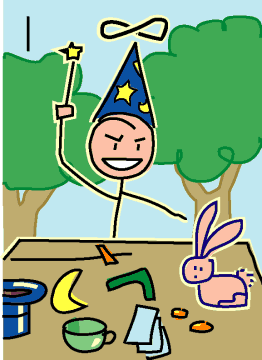

→
Damian Cugley →
Alleged Tarot 2002 →
png →
→
Damian Cugley →
Alleged Tarot 2002 →
png →
| « 0. The Fool | II. The Papess » | |
|  | ||
Upright: skill, confidence, communication
Reversed: lack of confidence, bad communication
If the Fool represents blissful ignorance, the Magician (or Conjourer) represents skill and cleverness.
In modern decks he is shown with an ‘infinity’ halo and the objects of the table before him are the four suits (representing mastery over the four elements). I have followed this tradition but given him both a pointy wizards’s hat (referring to the magical interpretation) and a rabbit and top hat (referring to the conjourer interpretation). The rabbit-from-the-hat trick also stands for showy skills that are not actually particularly useful—cleverness as opposed to wisdom. After all, the Magician is more skilled than the Fool, but has not advanced all that much through the journey of the Arcana.
See also Thirteen’s description on the Aeclectic Tarot site
If your browser supports SVG, then you should visit the SVG version of this page. It is so much more cool!